SQL Server / Instalación
Instalación de SQL Server 2025 Developer con Active Directory
Entorno y alcance
Procedimiento observado en Windows Server 2022 Datacenter Evaluation, versión 21H2, compilación 20348.587. El servidor SQL es miembro de un dominio existente; el controlador de dominio está en otro equipo. Se instaló SQL Server 2025 Enterprise Developer, solo Servicios de Motor de base de datos, en la instancia con nombre MSSQLSERVERCONAD, junto con SSMS 22.11.3.
1. Preparar el servidor miembro y unirlo al dominio
Nombre e IPv4
En Configuración > Sistema > Acerca de, cambia el nombre del servidor y reinicia. Asigna IPv4 estática y configura como DNS preferido el DNS del controlador de dominio.
Ruta de red utilizada: Configuración > Red e Internet > Estado > Cambiar opciones del adaptador > Ethernet > Propiedades > Protocolo de Internet versión 4 (TCP/IPv4) > Propiedades. Durante el diagnóstico se retiró una dirección DNS IPv6 que apuntaba a otro resolvedor.
No uses como DNS preferido un resolvedor público o el router. El miembro debe resolver la zona de Active Directory.
Verificar DNS y localizar el controlador
Sustituye <dominio-dns> por el nombre DNS real:
nslookup -type=SRV _ldap._tcp.dc._msdcs.<dominio-dns>
nltest /dsgetdc:<dominio-dns> /forceLa primera consulta debe devolver registros SRV; la segunda debe encontrar el controlador. En este laboratorio ambas respondieron después de corregir DNS.
Resolver el error de SID y unir el dominio
El primer intento no contactó con el dominio y apareció un error de SID duplicado. Se ejecutó Sysprep con generalización en el servidor miembro, se reinició y se repitió la unión. No ejecutes Sysprep en el controlador de dominio.
Abre Configuración > Sistema > Acerca de > Configuración avanzada del sistema > Nombre de equipo > Cambiar. Selecciona Dominio, escribe el nombre DNS completo y pulsa Aceptar. Cuando Windows solicite credenciales, introduce una cuenta autorizada para unir equipos. Acepta la confirmación y reinicia.
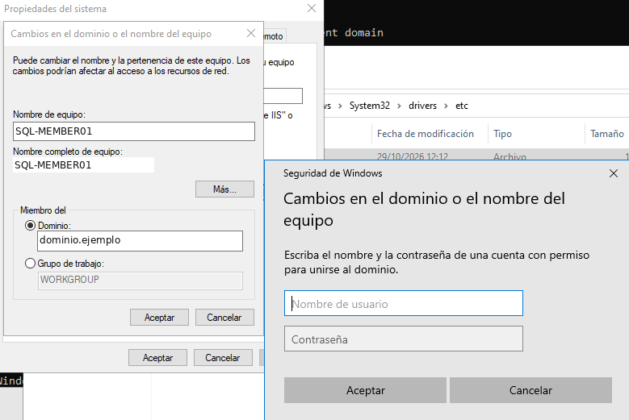
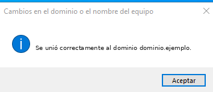
Comprobación: el servidor SQL quedó unido como miembro. El error previo de Get-ADDomain (ActiveDirectoryServer:8250, “El servidor no es funcional”) no devolvió DNSRoot ni NetBIOSName; la consulta SRV y nltest confirmaron después la localización del controlador.
2. Instalar SQL Server 2025 Enterprise Developer
En el Centro de instalación de SQL Server, selecciona Instalación > Nueva instalación independiente de SQL Server o agregar características a una instalación existente.
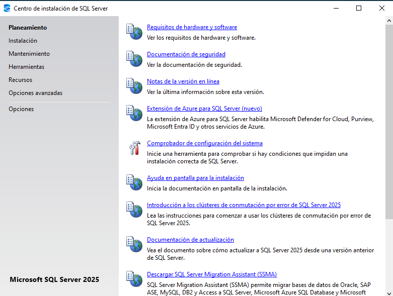
Edición, licencia y opciones
Elige Enterprise Developer en las ediciones gratuitas y acepta los términos. Microsoft Update se dejó desactivado. La extensión de Azure se desmarcó porque no se configuraría administración híbrida.
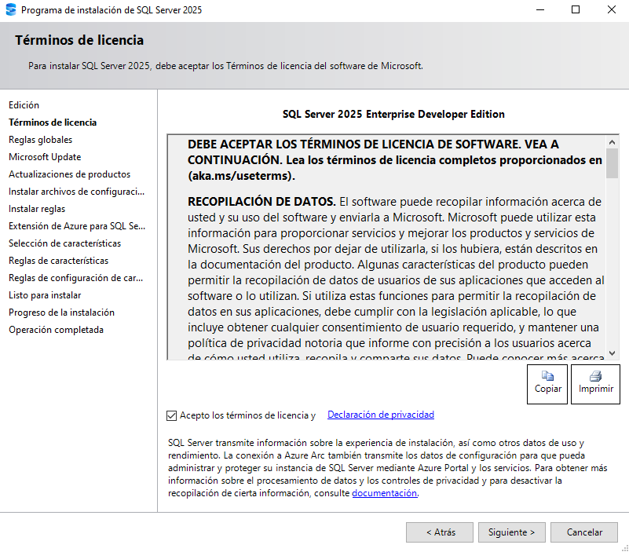
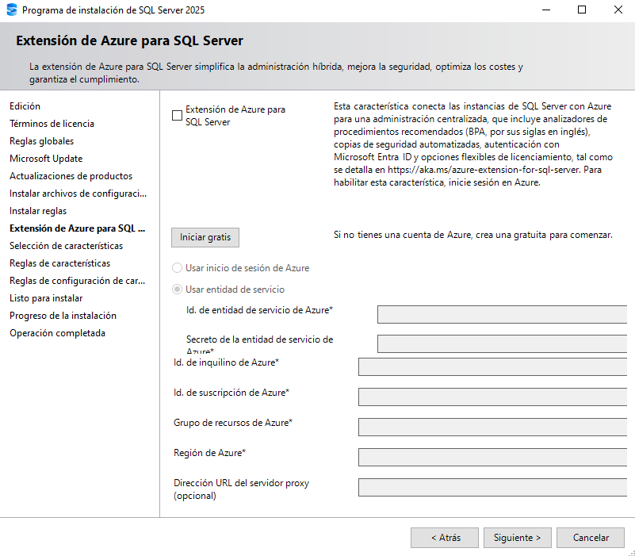
Características e instancia
Marca únicamente Servicios de Motor de base de datos. Conserva las rutas predeterminadas si son adecuadas para el almacenamiento del servidor. En Configuración de instancia, elige Instancia con nombre e introduce MSSQLSERVERCONAD.
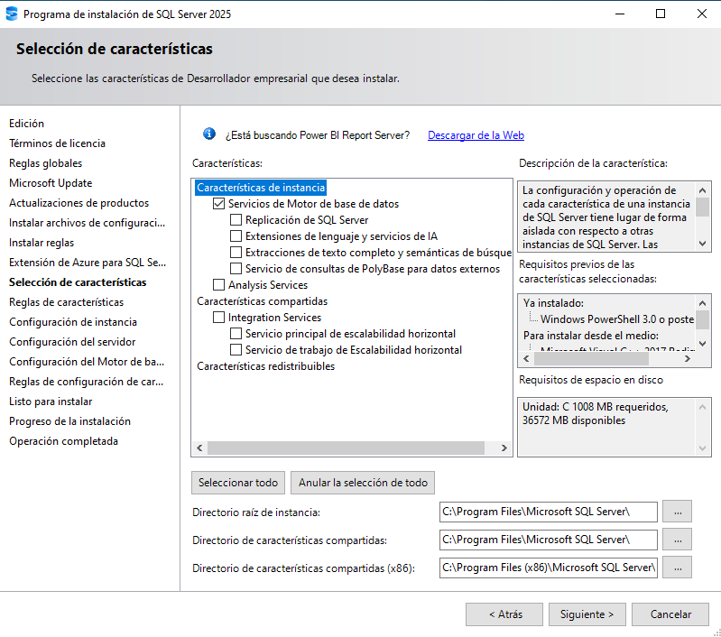
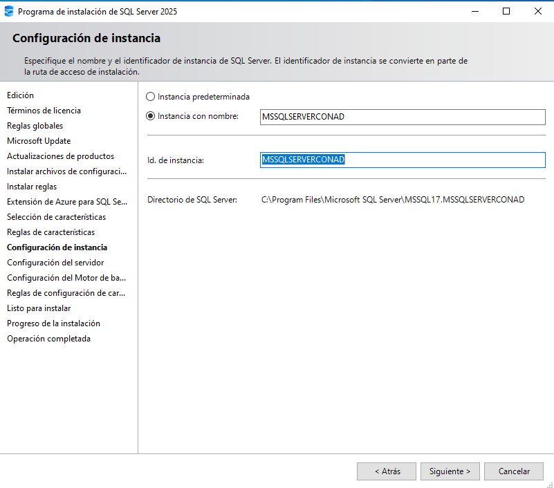
Servicios, autenticación y administradores
Se conservaron las cuentas predeterminadas. El Motor de base de datos quedó en inicio automático, SQL Server Agent en inicio manual y SQL Server Browser deshabilitado. Se concedió el privilegio de mantenimiento de volúmenes al motor.
En configuración del motor se eligió Modo mixto, se definió una contraseña para sa y se agregó la cuenta autorizada del dominio como administradora. La imagen oculta los datos sensibles; comprueba que no haya administradores duplicados.
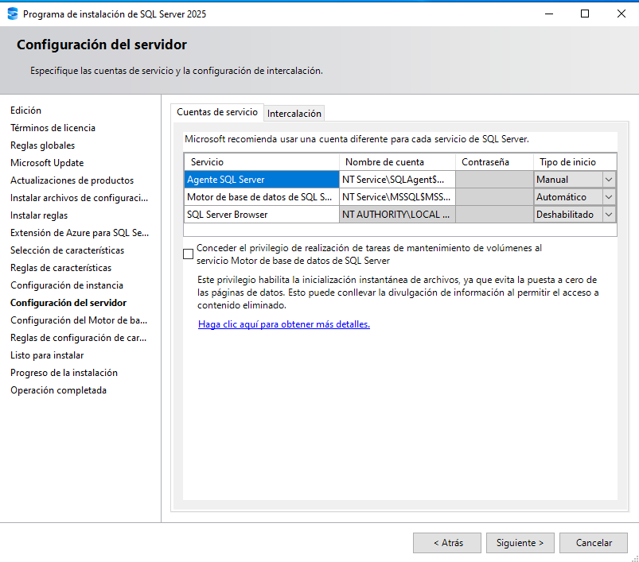
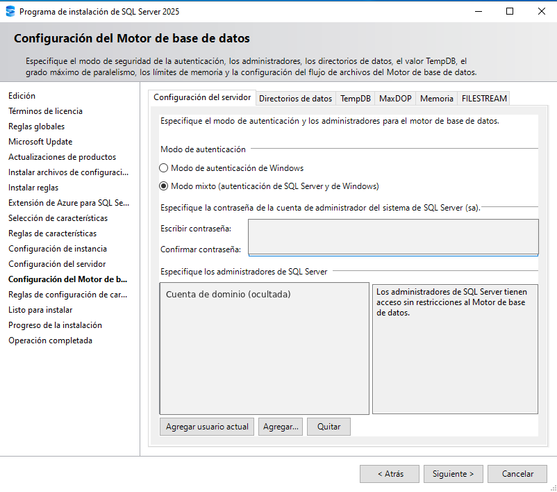
Instalar y comprobar
Revisa el resumen y pulsa Instalar. El asistente terminó correctamente: Motor de base de datos, SQL Browser, objeto de escritura de SQL y archivos auxiliares aparecieron como correctos.
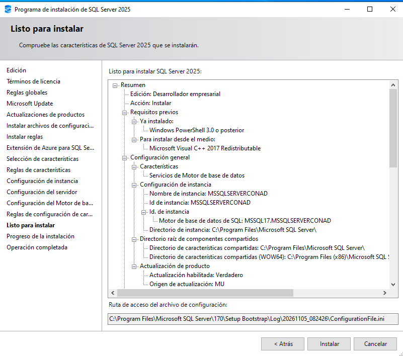
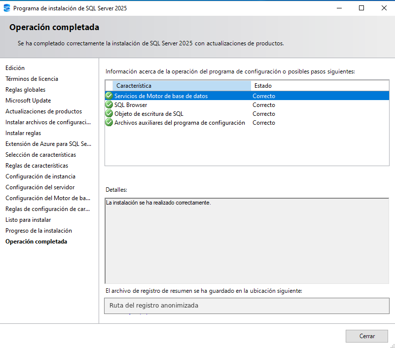
3. Instalar SQL Server Management Studio
Descarga SSMS desde Microsoft Learn. El instalador de SSMS 22 abre Visual Studio Installer. Conserva los componentes principales; aquí se desmarcó la carga opcional Híbrido y migración. La versión instalada fue 22.11.3.
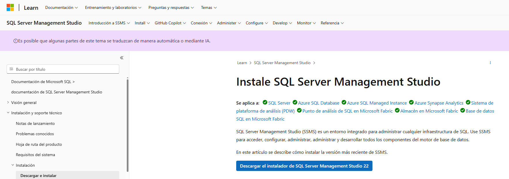
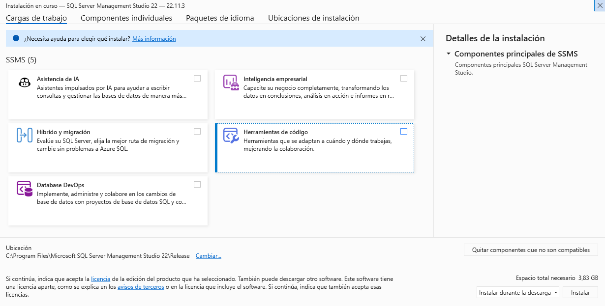
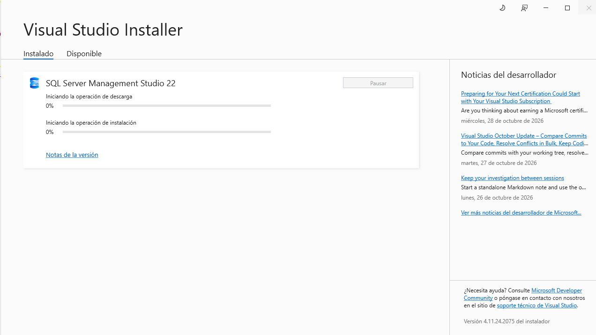
4. Conectar y verificar la instancia
En SSMS, abre Conectar > Motor de base de datos y configura:
- Servidor:
localhost\MSSQLSERVERCONAD - Autenticación: SQL Server
- Usuario:
sa - Contraseña: la definida en el asistente
- Cifrar: obligatorio; activa Certificado de servidor de confianza para este laboratorio local
La captura mantiene la contraseña enmascarada. También puedes usar autenticación de Windows con la cuenta de dominio agregada a los administradores del motor.
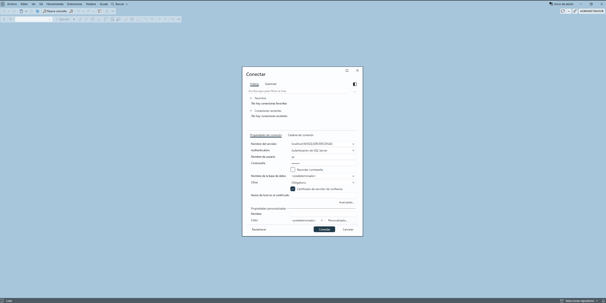
Resultado comprobado: SSMS conectó y el Explorador de objetos mostró las bases de datos, seguridad y objetos del servidor.
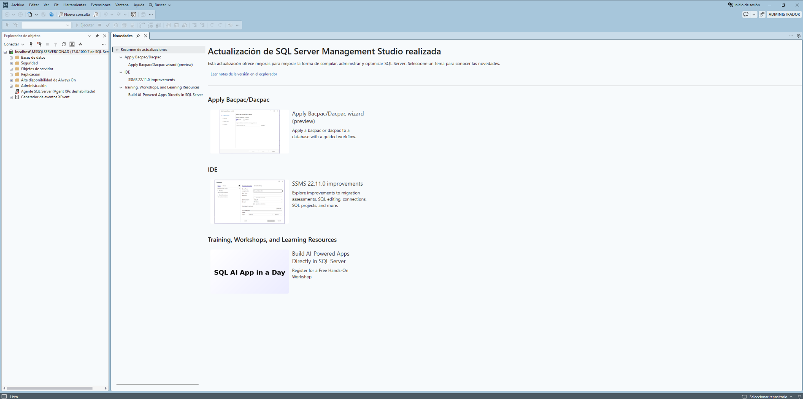
Incidencias y notas
- Dominio no localizado: revisa DNS preferido, registros SRV y
nltest; el mensaje no demuestra por sí solo que las credenciales sean incorrectas. - SID duplicado: en este caso se generalizó el servidor miembro con Sysprep; nunca el controlador.
- Certificado: confiar en el certificado se usó solo para el laboratorio; en producción configura y valida un certificado de servidor.
- SQL Server Agent: quedó en inicio manual; actívalo si necesitas trabajos programados.
- Developer: solo desarrollo y pruebas, no producción.